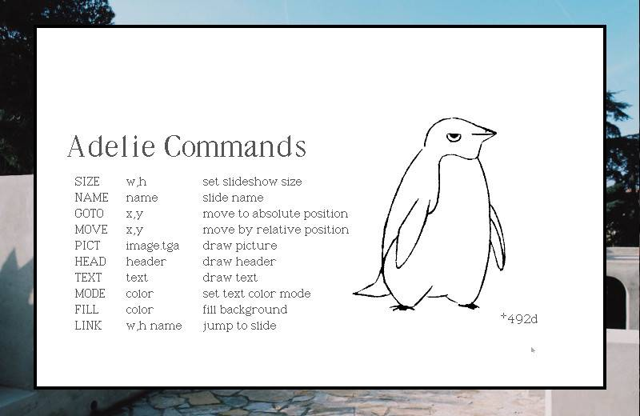
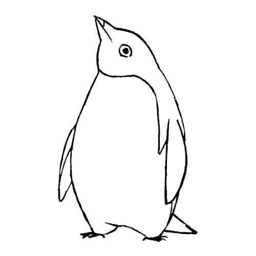
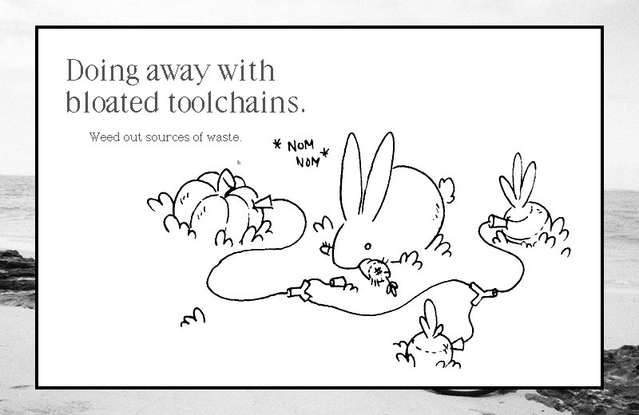
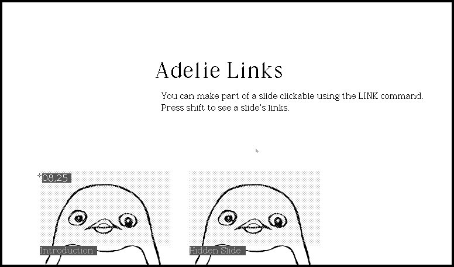
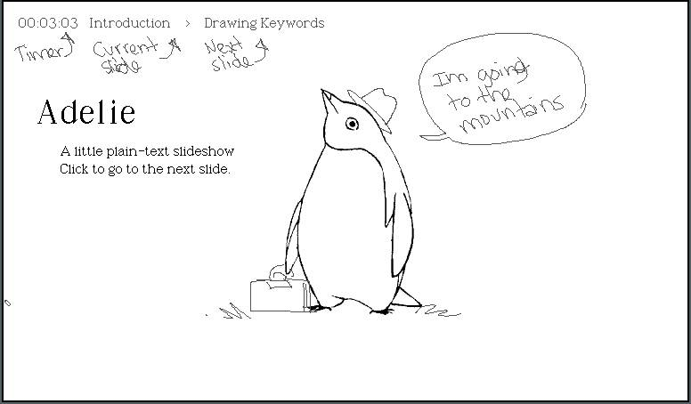
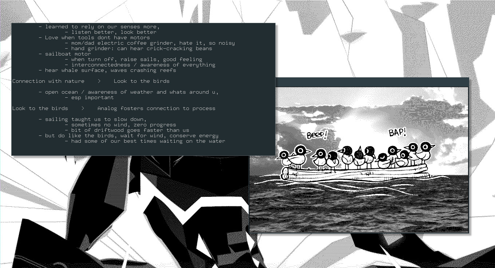
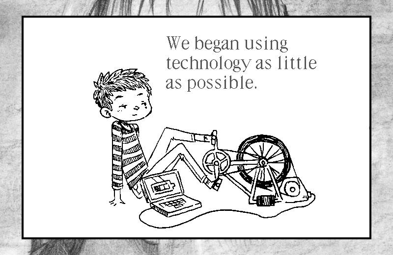

adelie
A slideshow program
 Adelie is a plain-text presentation tool and format. It is used to create slideshows with uxn. It features a handful of commands to quickly place text and images on slides, it can be operated with a keyboard, mouse or a game controller.
The program features two font sizes to choose from, and TGA image support. All sizes are in hexadecimal numbers.
- Getting started
- Commands
- Controls
- Making a slideshow
- Size
- Goto
- Mode
- Fill
- Pict
- Head and Text
- Links
- Speaker view
- Speaker Notes
- Stop
- Wait
- Rect
- Example project
- Story
Getting Started
Begin by downloading adelie.rom(25kb). If you wish to assemble the rom yourself, see the project repository. You must have an Uxn emulator to use Adelie. To run the slideshow, in a terminal window navigate to the project folder and type:
uxnemu bin/adelie.rom slides.txt
Commands
Sideshow files contain one command, or comment, per line.
- SIZE
- set slide size
- NAME
- set slide name
- GOTO
- move to absolute position
- LINK
- make link region
- STOP
- ignore slide controls
- WAIT
- automate slide control
- MODE
- set text color
- PICT
- draw picture
- HEAD
- draw header
- TEXT
- draw text
- FILL
- fill background
- RECT
- fill rectangle
Controls
- mouse1
- next slide
- mouse2
- draw marker
- mouse3
- prev slide
- →
- previous slide
- ←
- next slide
- alt
- previous slide
- ctrl
- next slide
- shift
- toggle link view
Making a slideshow
The project text file consists of a plain text, for example myproject.txt, file where each line begins with a command written as 4 uppercased characters.
Below is an example of an all-text slide (HEAD):
NAME Slide 1 FILL 00 GOTO 03,24 MODE 0f HEAD Larger Header MODE 08 MOVE 00,05 HEAD Smaller text`with a linebreak
And here is a slide with both text and an image(PICT):
NAME Slide 2 GOTO 00,00 PICT picture.tga MOVE 30,02 MODE 0a HEAD Picture name
Size
Adelie uses hexadecimal numbers, in which the numbers from 10 to 15 are represented as the letters a to f. So if the desired text position of an image in decimals is 12,11 the hexadecimal equivalent would be 0c,0b. View this hexadecimal table for help with conversion.
The default ratio for any project is 768x448(30,1c). Specifying a size in the project text file (at the top of the text file before the slides), will load the slideshow at that resolution. When deciding on a slide size, it is necessary to use multiples of 16.
SIZE 30,1c ( 768 x 448 )
If, for example, the desired size is 720x480, it is necessary to make a calculation to get the correct size for Adelie. 720 and 480 must each be divided by 16, and then converted to hexadecimals.
720/16=45 decimal, or 0x2d hexadecimal. 480/16=30 decimal, or 0x1e hexadecimal. Result: SIZE 2d,1e
Goto
The command GOTO is used to position both text and images in a slideshow. To make it easier to place images on the canvas, middle-clicking on a slide will display the position of the cursor, marked on screen by a cross hair and a set of coordinates. Press shift to remove the markers from view.
In the project text file, the GOTO command must sit on the line right above the text or image it will affect.
Example:
GOTO 24,04 HEAD We began using`technology as little`as possible.
Mode
The MODE command refers to the 'blending modes' in uxn. The colors are determined by the color theme applied to the project.
Color options for Adelie are as follows:

Text version:
| Blending(DBCA) | |||||||
|---|---|---|---|---|---|---|---|
| 0 | 4 | 8 | c | ||||
| 1 | 5 | 9 | d | ||||
| 2 | 6 | a | e | ||||
| 3 | 7 | b | f | ||||
Fill
The command FILL will insert a solid background to the slide. For color information, see blending modes(above table).
If an image takes up the entire canvas, a fill is not needed, but if the image is repositioned on the canvas the previous slide will be visible underneath. Adding a fill will keep that from happening.
Pict
The command PICT is used to add images in the slideshow.
Adelie requires that images be saved in the .tga format. When exporting images to .tga, uncheck the RLE for compression box (if it option comes up), and change Bottom left in the Origin drop-down menu to Top left.
By default, images will be centred on the canvas(00,00) and can be re-positioned using GOTO followed by a hexadecimal position.
Head and text
Headers are labelled as HEAD, and sub-text as TEXT. Header text is larger, while sub-text is smaller.
Writing text without linebreaks ` will leave the text as a continous phrase, which may spill out of the canvas. It is not necessary to add spaces before or after the `.
Below is the text used to make the above slide:
NAME Power solutions FILL 03 GOTO 04,03 PICT weeding.tga GOTO 04,04 HEAD Doing away with`bloated toolchains. GOTO 08,10 TEXT Weed out sources of waste.
Links
The LINK command makes an area on the canvas clickable. With LINK, it becomes possible to make small games in Adelie.
LINK expects a size. In the above example the two penguin faces act as two separate links, and the size of the clickable region is yours to determine (in the above example it covers the penguin's head). To link to a specific slide, enter that slide's name after the size. Press shift to see the clickable region and slide name, press shift again to make it disappear.
Like with the HEAD,TEXT or PICT commands, a GOTO is required to position the clickable region over the desired portion of the canvas.
When using the LINK command, it is recommended to use the STOP command as well so that it is only ever possible to get past the slide by way of clicking a link.
Example of a slide from the Adelie tutorial, with links:
NAME Links FILL 03 MODE 0c GOTO 04,10 PICT etc/adelie3.tga GOTO 24,10 PICT etc/adelie3.tga GOTO 20,0c HEAD Adelie Links MOVE 02,07 TEXT You can make part of a slide clickable using the LINK command.`Press shift to see a slide's links. MODE 06 GOTO 08,24 LINK 1c,10 Introduction GOTO 28,24 LINK 1c,10 Hidden Slide STOP
Speaker View
If doing a presentation, pressing SHIFT reveals a timer in the upper left corner, ideal if the presentation has a time limit, and makes visible information about the current and following slide.
In this mode it is also possible to draw on the slide itself, to add notes, or silly drawings.
If SHIFT is pressed again, all notes will be erased.
Speaker Notes
When making a presentation we like to keep notes for each slide, as a reminder on what to say.
The notes are printed in the terminal, and change from slide to slide.
Notes ought to be inserted in the same file as the slides, after every slide (following all of the image, text, and position information). We like to add indentations to make the text easier to follow.
Example:
NAME [rek] Rek, Dev and Pino
FILL 03
GOTO auto
PICT media/rekdev.tga
Im Rek, & this is Devine, and together we form the Hundred Rabbits artist collective.
Since 2016, we have lived aboard a 10-meter long sailboat, named Pino,
We make art, games, books, as well as tools for drawing, writing, composing music.
Including this slideshow program.
NAME [rek] boat vivarium
FILL 03
GOTO 17,03
PICT media/pino.tga
GOTO 0a,12
MODE 05
HEAD Boat vivarium
GOTO 0a,18
TEXT At sea, a boat is an island.
With our boat, we have circumnavigated the Pacific Ocean.
We started in Western Canada, sailed to Mexico,
then across all the South Pacific Islands to NZ,
Stop
The STOP command ignores all slide controls.
If making a slide with clickable links, using a STOP disables slide controls so that the user cannot go forward without selecting a link. It's also used to stop a slideshow with some automated slides (with the WAIT command).
Wait
The WAIT command acts as a timer to automate transitions between slides, for creating little animation sequences etc..
The time is in hexadecimal. 01 is 1/60th of a second, 02 is 2/60th of a second, 40 128 etc.
Example:
NAME Drawing Keywords FILL 03 GOTO 2c,08 MODE 0c PICT etc/adelie1.tga GOTO 04,0d HEAD Drawing Keywords WAIT 40 NAME Drawing: Mode GOTO 06,15 TEXT MODE MOVE 09,00 TEXT mode MOVE 09,00 TEXT set blending mode WAIT 08
Rect
To draw a rectangle on the canvas, use the command RECT along with a position.
Example file
Here is an example of a 4 slide project:
SIZE 2d,1e NAME logo GOTO 00,00 PICT media/nime.tga NAME 100r logo FILL 03 GOTO 00,00 PICT media/100r.tga NAME Rek and Dev FILL 03 GOTO 00,00 PICT media/rekdev.tga NAME Setup FILL 03 GOTO 0d,00 PICT media/sailing.tga GOTO 04,05 MODE 05 HEAD Living & working`from a sailboat. GOTO 08,12 TEXT Name: Pino`Make: Yamaha`Length: 10m`Made: 1982`Origin: Shizuoka, Japan
Adelie is capable of more complex projects, it's possible to make animated slide transitions using the WAIT, STOP, PATT(undocumented). See this example project(Mastodon).
Source:
NAME -- PATT 81 00 00 00 00 00 00 81 FILL 0f WAIT 08 NAME -- PATT c3 81 00 00 00 00 81 c3 FILL 0f WAIT 08 NAME -- PATT e7 c3 81 00 00 81 c3 e7 FILL 0f WAIT 08 NAME -- PATT ff e7 c3 81 81 c3 e7 ff FILL 0f WAIT 08 NAME -- PATT ff ff e7 c3 c3 e7 ff ff FILL 0f WAIT 08 NAME -- PATT ff ff ff e7 e7 ff ff ff FILL 0f WAIT 08 NAME -- PATT ff ff ff ff ff ff ff ff FILL 0f WAIT 08
Story
We produced Adelie for our Libre Planet Keynote talk in March 2022. We used it again for our Nime 2022 Keynote talk.
license
The license applies to all the documented projects, the projects themselves and their assets. The source code of this website and our apps are under the MIT License, but the assets and text content of this website and of our apps are under the BY-NC-SA4.0 License. We are happy to pass knowledge, and that others can learn from our projects, improve on them, or make them into something else that is useful.
DO NOT resell or mint our work, doing so is very lazy, and disrespectful to us.
You can find our more recent projects on Sourcehut.